▲ 직지사 입구 문. 촬영 시기는 확인하지 못했다. 사진=hyolee2(위키미디어 커먼즈, CC BY-SA 4.0)
"직지사는 몇 시까지 열려 있고, 황악산은 언제부터 막힐까?" 경북 김천 직지사는 TourAPI(한국관광공사) 기준 07:00~18:00, 연중무휴이고 주차는 소형 약 100대로 안내돼 있다. 그 뒤편 황악산(비로봉 1,111.4m)에는 "매년 11월 1일~5월 15일 입산 통제"라는 문구가 올라 있다. 이 글은 직지사 누리집, 한국관광공사 TourAPI, 김천시 문화관광 누리집, 산림청 100대 명산 소개, 한국불교문화사업단 템플스테이 누리집을 2026년 10월 9일에 직접 열어 확인한 값만 정리했다. 확인하지 못한 항목은 그대로 "확인하지 못했다"고 적었다.
💡 먼저 결론
직지사는 개방 시간·휴무·주차는 공식 값이 있지만 입장료는 공식 안내에서 확인하지 못했다. 황악산은 등산 코스 거리·소요 시간과 단풍 절정 예측 날짜를 공식 자료에서 확인하지 못했다. 그래서 이 글은 날짜를 지어내지 않고, 직지사·직지문화공원·사명대사공원·템플스테이처럼 확인되는 값 중심으로 짰다. 직지사 누리집 바로가기
1. 한눈에 보기 — 확인한 것과 확인하지 못한 것
직지사·직지문화공원·사명대사공원·김천시립박물관은 모두 김천시 대항면에 모여 있고, 김천시 문화관광 누리집도 이곳을 하나의 "직지사권"으로 묶어 소개한다. 아래 표는 각 항목의 근거와 상태를 구분한 것이다.
| 항목 | 확인된 값 | 출처·상태 |
|---|---|---|
| 직지사 개방 시간 | 07:00~18:00 | TourAPI(수정일 2026-06-10)·무장애 관광정보(수정일 2026-09-10) 일치 |
| 직지사 휴무 | 연중무휴 | TourAPI |
| 직지사 주차 | 가능, 소형 약 100대 | TourAPI |
| 직지사 입장료 | - | 공식 안내를 확인하지 못했다(누리집·TourAPI 모두 요금 항목 없음) |
| 황악산 개방 | 상시 개방, 입산통제 문구 있음 | TourAPI(수정일 2026-03-13) |
| 황악산 코스 거리·소요 | - | 공식 자료에서 확인하지 못했다 |
| 황악산 단풍 절정 날짜 | - | 산림청 예측 목록에서 확인되지 않아 쓰지 않는다 |
| 템플스테이 | 운영, 054-429-1716 | TourAPI·템플스테이 누리집 |
| 김천시립박물관 | 09:00~18:00, 월요일 휴관, 일반 1,000원 | TourAPI(수정일 2026-04-16) |
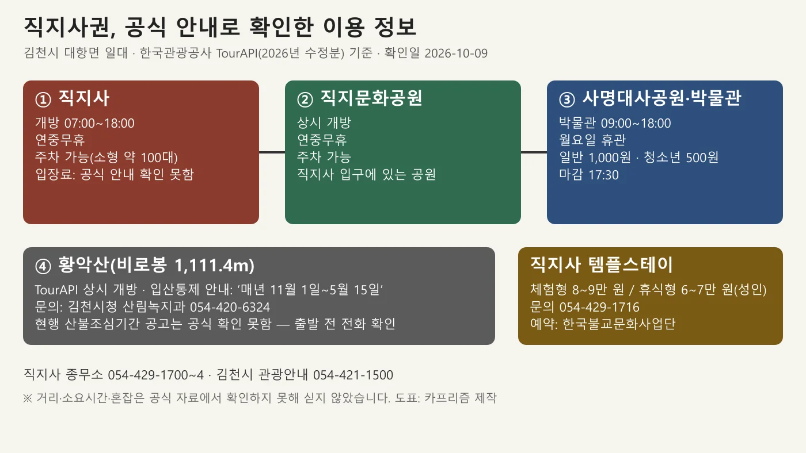
▲ 공식 안내로 확인한 이용 정보 도표(확인일 2026-10-09). 사진=카프리즘 제작
2. 직지사 — 개방 시간·주차·입장료·문의
직지사는 대한불교조계종 제8교구 본사로, 주소는 경북 김천시 대항면 직지사길 95다. TourAPI 소개에 따르면 신라 눌지왕 2년(418) 아도화상이 도리사와 함께 개창한 것으로 전한다. 임진왜란 때 전소된 뒤 광해군 2년(1610)부터 60여 년에 걸쳐 복구했다고 소개된다. 직지사 누리집의 "창건 및 역사"에는 "창건에 대한 확실한 기록은 없다"는 단서도 붙어 있다.
| 항목 | 내용 | 근거 |
|---|---|---|
| 주소 | 경북 김천시 대항면 직지사길 95 | 직지사 누리집 '오시는 길' |
| 개방 시간 | 07:00~18:00 | TourAPI·무장애 관광정보 |
| 휴무 | 연중무휴 | TourAPI |
| 주차 | 가능, 소형 약 100대. 장애인 주차장 4대 | TourAPI·무장애 관광정보 |
| 입장료 | 공식 안내 확인 못함 | 누리집·TourAPI에 요금 항목 없음. 방문 전 종무소 확인 |
| 문의 | 종무소 054-429-1700~4, 템플스테이 054-429-1716 | TourAPI·직지사 누리집 |
| 접근성 | 출입구까지 경사로(완만), 자동차로 사찰까지 접근 가능, 장애인 화장실 있음 | 무장애 관광정보(수정일 2026-09-10) |
✅ 입장료는 이렇게 확인하자
검색하면 2,500원 같은 숫자가 나오지만 출처가 오래된 후기다. 사찰 문화재 관람료는 2023년 5월 4일부터 국가지정문화재 보유 사찰 65곳이 면제됐고, 경북매일(2023-05-02)이 전한 경북 면제 사찰 명단에는 김천 직지사가 들어 있다. 하지만 이 글에서 연 직지사 누리집·TourAPI에는 요금 항목이 없고 2026년 현재 징수 여부를 공식 자료로 확인하지 못했다. 관람료와 별개로 주차료는 따로 붙을 수 있다는 보도도 있다. 금액을 싣지 않았으니 종무소 054-429-1700으로 확인하고 가는 것이 가장 정확하다. 종무소·오시는 길 바로가기
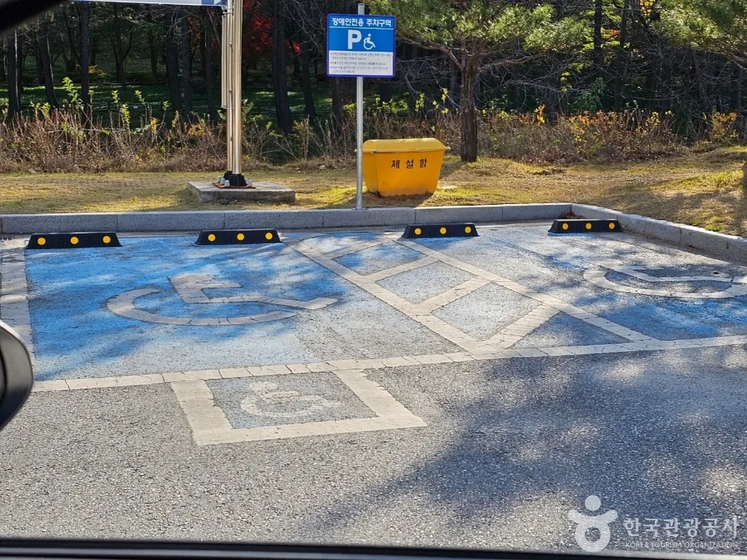
▲ 직지사 장애인 주차구역 바닥 표시. 무장애 관광정보에는 장애인 주차장 4대로 안내돼 있다. 사진=한국관광공사
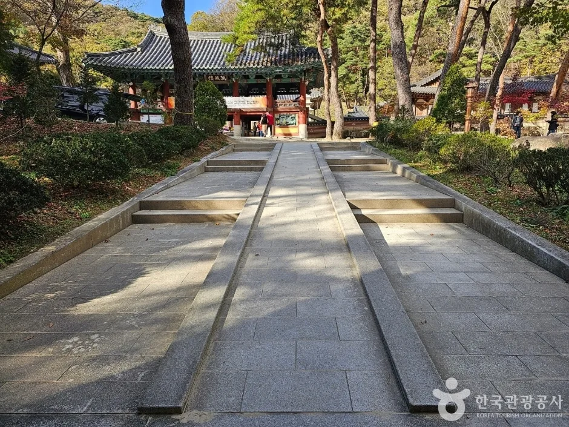
▲ 경사로가 설치된 진입 통로. 무장애 관광정보에는 출입구까지 완만한 경사로가 있다고 안내돼 있다. 사진=한국관광공사
3. 경내 볼거리 — 공식 소개에 나온 전각만
TourAPI와 직지사 누리집의 소개에 따르면 현존 건물로 대웅전, 1,000구의 아기부처를 모신 비로전, 극락전, 응진전, 관음전, 명부전, 약사전, 설법전, 만덕전, 사명각, 범종각 등이 있다. 입구에는 "1,000년 묵은 칡뿌리와 싸리나무 기둥의 일주문", 금강문, 사천왕문이 있다고 소개한다. 직지사 누리집 '전각소개' 메뉴는 대웅전·비로전·응진전·관음전·약사전·극락전·설법전·남월료·만덕전·명월당·청풍료를 따로 안내한다. 국가유산포털에는 직지사 대웅전과 천왕문이 보물로 등재돼 있다.
| 구분 | 소개 내용 | 비고 |
|---|---|---|
| 일주문 | 1,000년 묵은 칡뿌리와 싸리나무 기둥 | TourAPI 소개 |
| 금강문·사천왕문 | 입구 문루 | TourAPI 소개(천왕문은 국가유산포털에 보물 등재) |
| 대웅전 | 영조 11년(1735) 중건, 보물 | 직지사 누리집·국가유산포털 |
| 비로전 | 1,000구의 아기부처 안치 | TourAPI 소개 |
| 그 밖의 전각 | 극락전·응진전·관음전·명부전·약사전·설법전·만덕전·사명각·범종각 등 | TourAPI 소개 |
| 사명대사 | 유정대사(사명대사)가 이 절에서 승려 생활을 시작 | TourAPI 소개 |
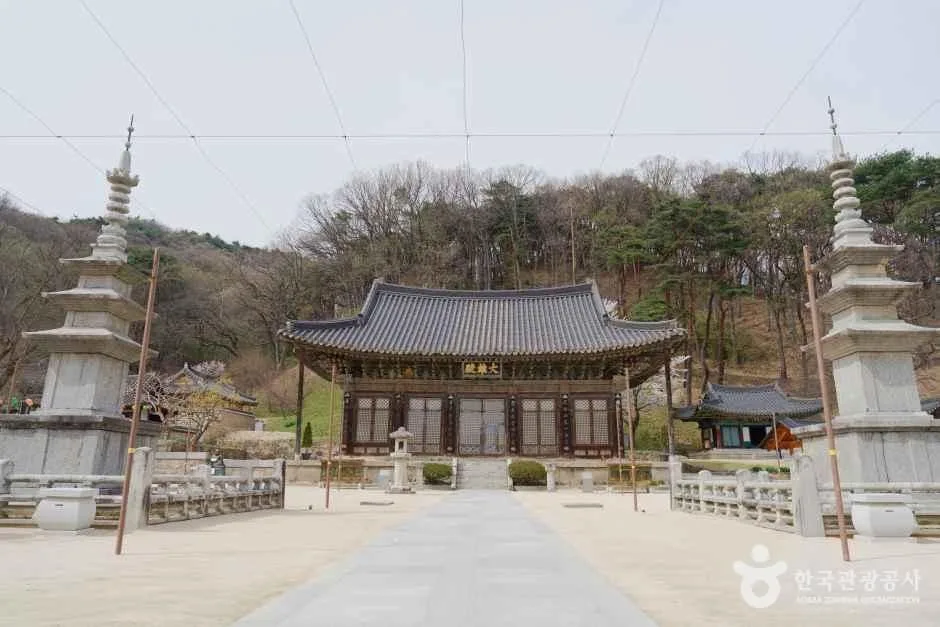
▲ 직지사 경내 전경. 전각 앞 마당 양쪽에 석탑이 서 있다. 촬영 시기는 확인하지 못했다. 사진=한국관광공사
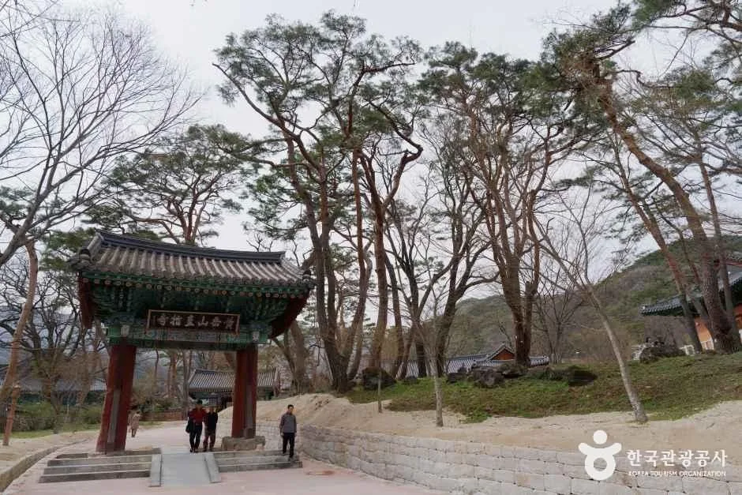
▲ 경내로 들어가는 길목의 문루와 진입로. 촬영 시기는 확인하지 못했다. 사진=한국관광공사
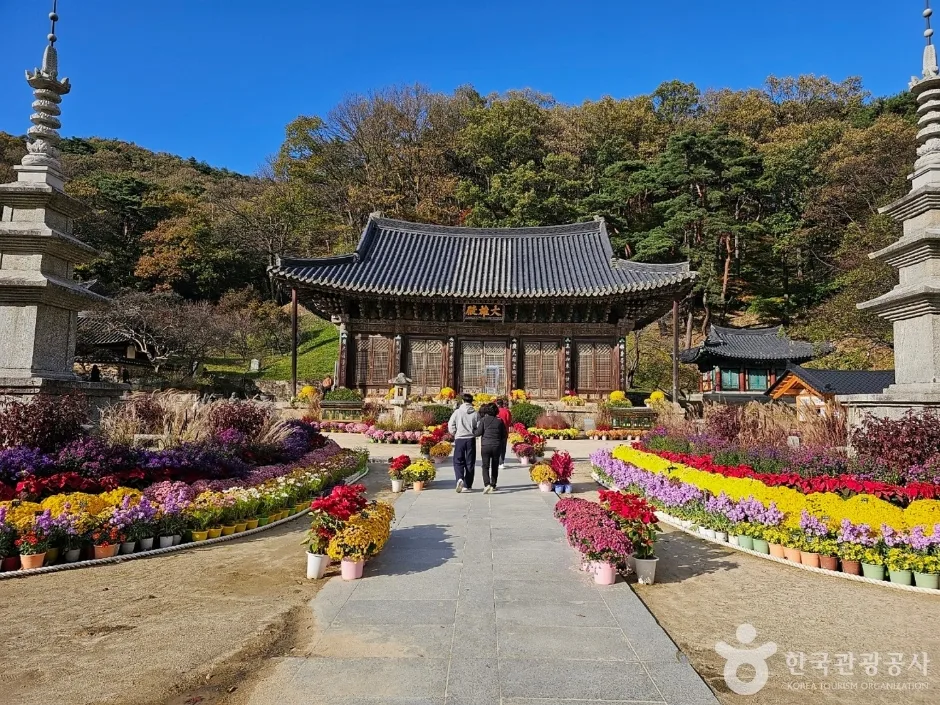
▲ 전각 앞 길 양옆에 꽃이 놓인 모습. 양쪽에 석탑이 보인다. 촬영 시기는 확인하지 못했다. 사진=한국관광공사
▲ '동국제일가람 황악산문' 현판이 걸린 입구 문. 촬영 시기는 확인하지 못했다. 사진=hyolee2(위키미디어 커먼즈, CC BY-SA 4.0)
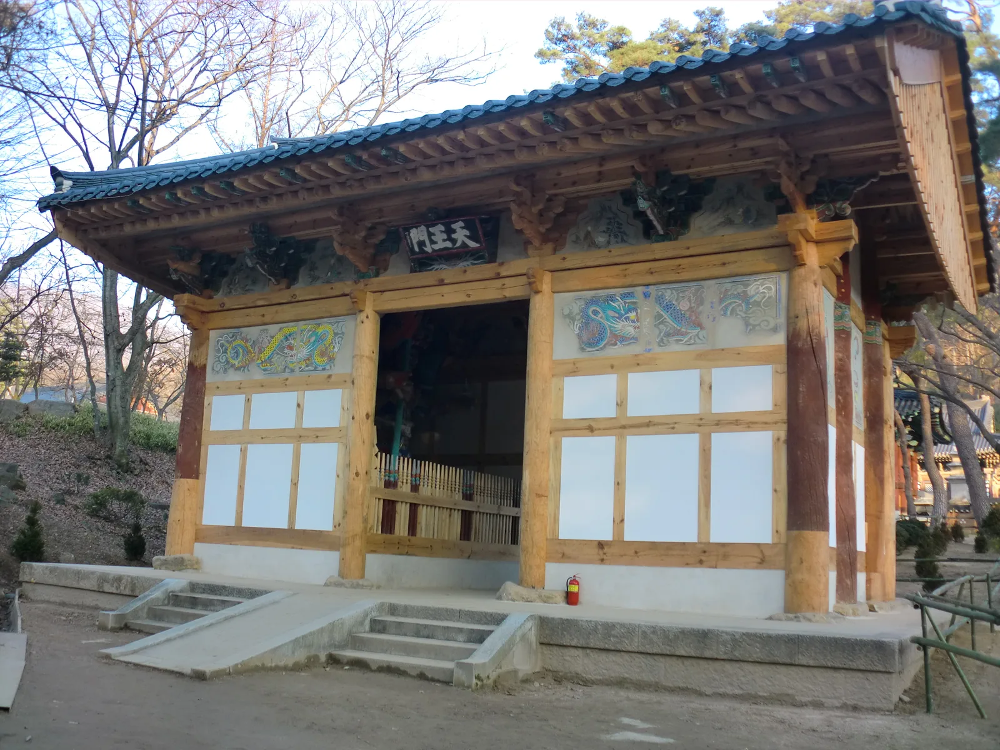
▲ 천왕문. 국가유산포털에는 보물로 등재돼 있다. 촬영 시기는 확인하지 못했다. 사진=hyolee2(위키미디어 커먼즈, CC BY-SA 4.0)
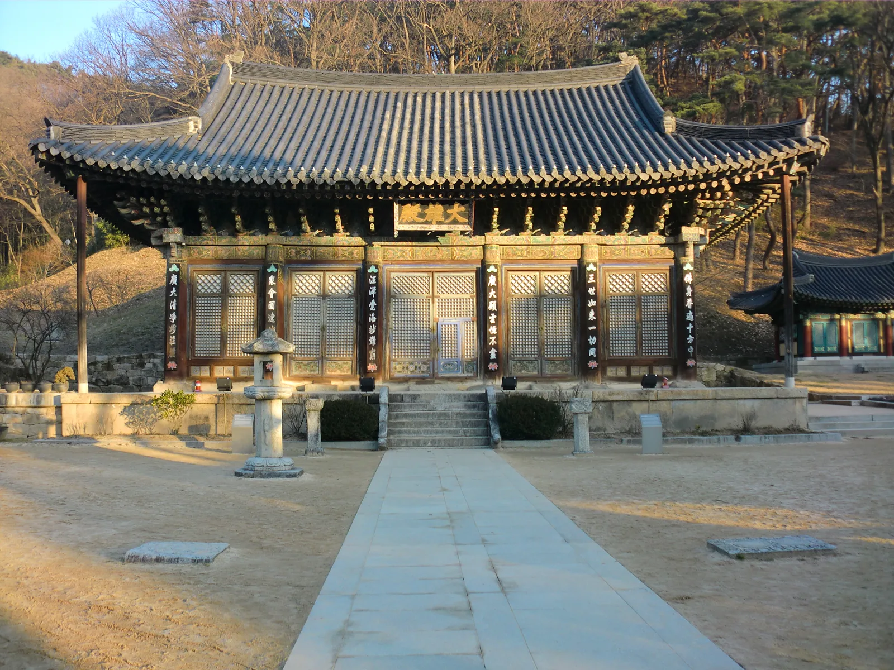
▲ 경내 큰 전각의 정면. 현판 판독이 어려워 전각 이름은 쓰지 않는다. 촬영 시기는 확인하지 못했다. 사진=hyolee2(위키미디어 커먼즈, CC BY-SA 4.0)
4. 황악산 — 확인된 산 정보와 입산통제 문구
산림청 100대 명산 소개에 따르면 황악산은 비로봉(1,111.4m)을 중심으로 백운봉(770m), 신선봉(944m), 운수봉(740m)이 직지사를 감싸고, 김천시에서 서쪽으로 12km 떨어진 백두대간 가운데 있다. 직지사 서쪽 200m 지점의 천룡대에서 이어지는 능여계곡이 대표 계곡으로 꼽히고, 정상에서는 서쪽 민주지산, 남쪽 수도산·가야산, 동쪽 금오산, 북쪽 포성봉이 보인다고 소개한다.
| 항목 | 내용 | 출처 |
|---|---|---|
| 높이 | 비로봉 1,111.4m(TourAPI는 1,111m) | 산림청 100대 명산·TourAPI |
| 주요 봉우리 | 백운봉 770m·신선봉 944m·운수봉 740m | 산림청 100대 명산 |
| 대표 계곡 | 직지사 서쪽 200m 천룡대에서 시작되는 능여계곡 | 산림청 100대 명산 |
| 개방 | 상시 개방 | TourAPI |
| 입산통제 문구 | 매년 11월 1일~5월 15일 입산 통제 | TourAPI 휴무일 항목(수정일 2026-03-13) |
| 문의 | 김천시청 산림녹지과 054-420-6324 | TourAPI |
| 등산 코스 거리·소요 시간 | - | 공식 자료에서 확인하지 못했다 |
⚠️ 입산통제 문구는 그대로 믿지 말고 전화로 확인
TourAPI의 "11월 1일~5월 15일"은 현행 입산통제 공고인지 확인하지 못했다. 가을철 산불조심기간은 별도 조정이 없으면 11월 1일~12월 15일이라는 중부지방산림청 보도(2026-09-21)가 있어 시작일 '11월 1일'은 이 기본 기간과 겹친다. 다만 같은 시기 다른 보도(공감신문, 2026-10-02)는 올해 기간을 '이달부터 11월 30일까지'로 전해 2026년 가을철 기간은 엇갈리며, 2025년에는 10월 20일~12월 15일로 앞당겨 운영했다. 산불조심기간과 입산통제구역 지정은 별개 제도라, 김천시청 공고·산림청 입산통제 지도에서 황악산 구간을 찾지 못했다. 황악산의 현행 입산통제 구간과 날짜는 김천시청 산림녹지과(054-420-6324)에 확인해야 한다. 날짜 구분은 입산통제 날짜 정리 기사에 있다. 산림청 바로가기
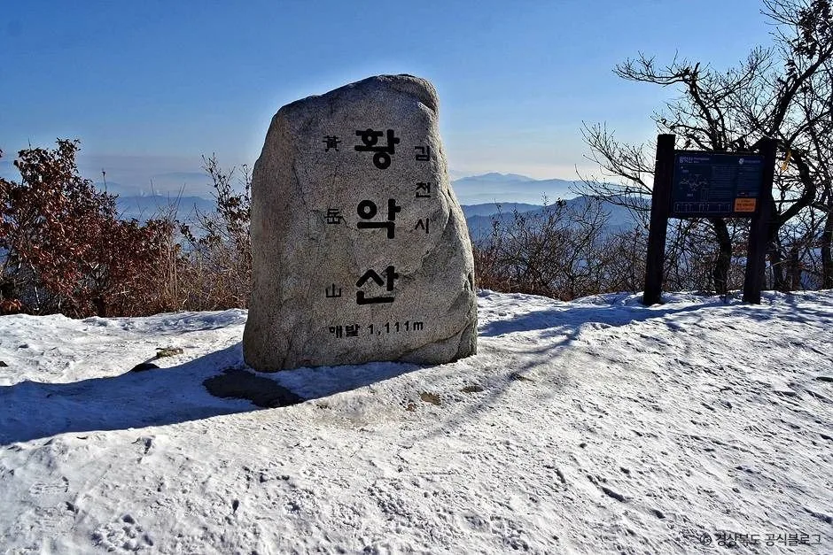
▲ 황악산 정상석. 눈이 쌓여 있는 모습이다. 촬영 시기는 확인하지 못했다. 사진=한국관광공사
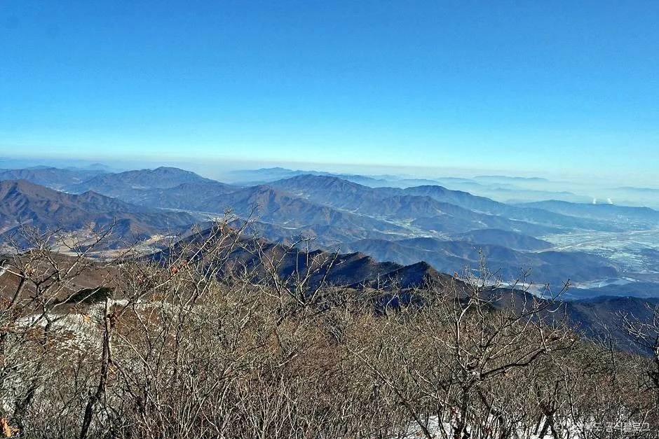
▲ 황악산에서 본 능선 조망. 촬영 시기는 확인하지 못했다. 사진=한국관광공사
5. 단풍 — 날짜를 쓰지 않은 이유
TourAPI와 산림청 소개 모두 황악산을 "가을에는 단풍, 겨울에는 설경이 아름다운 산"이라고만 소개하고 날짜는 적지 않았다. 카프리즘이 다룬 산림청 2026 절정 예측 기사의 산 목록에도 황악산은 없다. 그래서 황악산의 단풍 절정 날짜는 쓰지 않는다. 대신 전국 흐름은 산림청 공식 단풍 지도 기사와 단풍 주말표에서 확인하고, 연휴 일정은 10월 연휴 기사를 참고하면 된다.
직지사 경내 쪽은 누리집 행사 달력(2026년 10월)에 10월 10일 "제9회 호국성사 문화대제전"(공지 정식 명칭은 "호국성사 사명당 문화대제전")과 10월 17일 "직지사 자연수목장림 개원식"(08:30, 극락원)이 표시돼 있다. 직지사 공지에는 문화대제전의 국화 납품·전시와 산사음악회 용역 입찰공고가 올라와 있지만, 세부 프로그램과 시간은 확인하지 못했다.
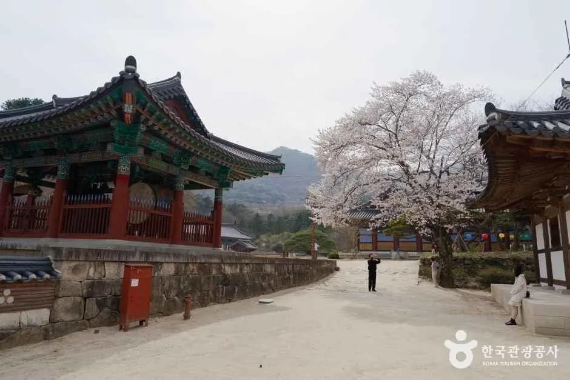
▲ 나무에 꽃이 핀 시기의 직지사 경내. 촬영 연도는 확인하지 못했다. 사진=한국관광공사
6. 직지사 인근 — 김천시 공식 소개에 있는 곳
김천시 문화관광 누리집의 직지사권 소개에 나오는 곳만 추렸다. 직지문화공원은 TourAPI에서 "황악산 직지사 입구에 있는 공원"으로, 직지문화공원 옆에는 세계도자기박물관과 사명대사공원이 있다고 소개한다.
| 장소 | 확인된 정보 | 문의 |
|---|---|---|
| 직지문화공원 | 상시 개방·연중무휴·주차 가능. 음악조형분수·조각작품·시비. 분수쇼 운영 시간은 확인하지 못했다 | 054-420-6448 |
| 사명대사공원 | 5층 목탑 규모 평화의 탑(1층 전시 공간)·김천시립박물관·건강문화원 등. 체험시설은 월요일 휴관, 시설별 시간 상이 | 054-421-1500 |
| 김천시립박물관 | 2020년 6월 22일 개관. 09:00~18:00(입장 마감 17:30), 월요일 휴관(월요일이 공휴일이면 다음 날)·1월 1일·설·추석 연휴, 일반 1,000원·청소년·군인 500원 | 054-421-1517 |
| 친환경생태공원(선인장 온실) | 선인장·다육식물 450여 종 전시. 운영 시간은 확인하지 못했다 | 054-421-1636 |
| 세계도자기박물관 | 직지사길 118. 운영 시간·요금은 확인하지 못했다 | 054-421-1641 |
| 백수문학관 | 정완영 시인 문학관(직지사길 118-18). 운영 시간은 확인하지 못했다 | 054-421-1635 |
| 김천시 사계절썰매장 | 123m, 6레인. 운영 시간은 확인하지 못했다 | 054-421-1650 |
김천시립박물관의 휴관일은 월요일(공휴일이면 다음 날)이라 10월 12일·19일·26일에는 문을 닫는다. 직지사는 연중무휴라 월요일에도 열려 있다. 박물관 요금은 "변동될 수 있으니 전화 문의 요망"이라는 단서가 붙어 있다.
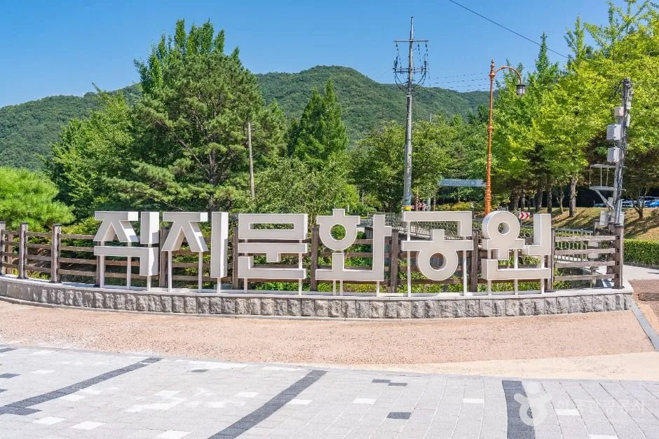
▲ 직지문화공원 입구의 글자 조형물. 촬영 시기는 확인하지 못했다. 사진=한국관광공사
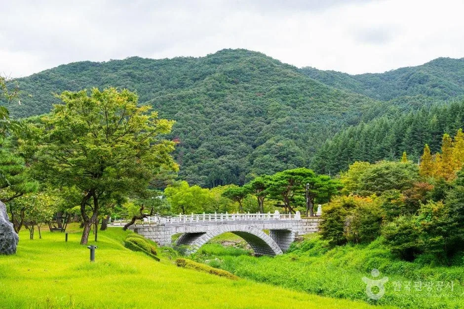
▲ 직지문화공원 안의 난간 다리와 산책로 일대. 촬영 시기는 확인하지 못했다. 사진=한국관광공사
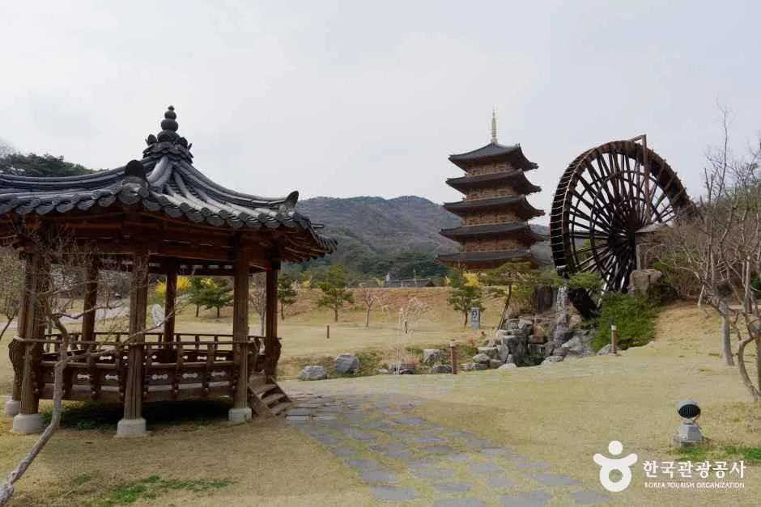
▲ 사명대사공원에서 본 정자와 5층 목탑, 물레방아. 촬영 시기는 확인하지 못했다. 사진=한국관광공사
7. 템플스테이 — 운영은 확인, 빈자리는 확인 못 함
TourAPI 소개에 따르면 직지사는 2002년 주한 외국인 대사를 초청해 전국 최초로 템플스테이를 공식 개최했고, 명상체험형과 휴식형으로 나눠 운영한다. 한국불교문화사업단 템플스테이 누리집에는 아래 요금이 적혀 있다. 예약 페이지에는 2026년 9월 20일~2027년 1월 1일 등으로 기간이 등록된 상품이 올라 있지만, 특정 날짜의 빈자리는 확인하지 못했다.
| 구분 | 성인 | 학생 | 미취학(5세 이상) |
|---|---|---|---|
| 내 마음 깊이 살펴보기(선·명상체험형) | 8~9만 원 | 6~7만 원 | 4~5만 원 |
| 내 마음의 작은 쉼표(휴식형) | 6~7만 원 | 5~6만 원 | 3~4만 원 |
공통 안내에는 미성년자는 보호자 동행 시 접수 가능하고, 1인실은 운영하지 않으며 방사를 다른 참가자와 함께 쓸 수 있다고 적혀 있다. 가족방 체험형 상품은 4인 이상만 예약할 수 있다. 문의는 054-429-1716 또는 010-6356-6084다. 가을 예약 경쟁은 템플스테이 예약 기사에 정리했다. 템플스테이 누리집 바로가기
8. 가는 길 — 직지사 누리집 안내 그대로
직지사 누리집 '오시는 길'에는 아래처럼 안내돼 있다. 요금과 배차는 변동될 수 있어 소요 시간·거리 중심으로만 옮긴다.
| 구분 | 안내 내용 |
|---|---|
| 자가용(서울) | 경부고속도로 추풍령IC → 국도 4번(김천 방면) → 지방도 903번 → 직지사. 표기 소요 3시간 |
| 자가용(부산) | 경부고속도로 김천IC → 국도 4번(영동 방면) → 지방도 903번 → 직지사. 표기 소요 2시간 30분 |
| 시내버스 | 김천역·터미널에서 11번·111번(직지사행). 누리집 표기 약 10분 간격 |
| 택시 | 김천역~직지사 약 22분(12.3km), 김천구미역~직지사 약 33분(20.9km) |
9. 출발 전 주의 — 산불철·주차·연휴
- 산불조심기간: 황악산 입산은 김천시청 산림녹지과 054-420-6324에 먼저 확인한다. 날짜 구분은 입산통제 날짜 정리 기사를 보자.
- 도로변 주정차: 단풍철 갓길 주정차는 단속 대상이 될 수 있다. 단풍철 갓길 주정차 기사를 참고하자.
- 폐장 시각: 직지사는 18:00까지다. 박물관은 17:30 입장 마감이므로 박물관을 먼저 보고 사찰로 가는 순서가 안전하다.
- 김천시 관광안내: 054-421-1500
10. 같이 보면 좋은 카프리즘 기사
✅ 출발 전 체크리스트
· 직지사 07:00~18:00, 연중무휴, 주차 소형 약 100대(TourAPI), 입장료는 종무소 054-429-1700 확인
· 황악산 입산통제는 김천시청 산림녹지과 054-420-6324 확인
· 김천시립박물관 월요일 휴관, 17:30 입장 마감
· 템플스테이 054-429-1716, 빈자리는 예약 페이지에서 확인
11. 정리
직지사는 07:00~18:00 연중무휴, 소형 약 100대 주차가 확인되지만 입장료는 공식 안내로 확인하지 못했다. 황악산(비로봉 1,111.4m)은 TourAPI에 11월 1일~5월 15일 입산통제 문구가 있으나 현행 공고와 맞는지는 김천시청 산림녹지과에 확인해야 한다.
단풍 절정 날짜와 등산 코스 거리·소요 시간은 공식 자료에서 확인하지 못해 싣지 않았다. 김천시립박물관은 월요일 휴관·일반 1,000원, 템플스테이는 054-429-1716에서 문의한다.